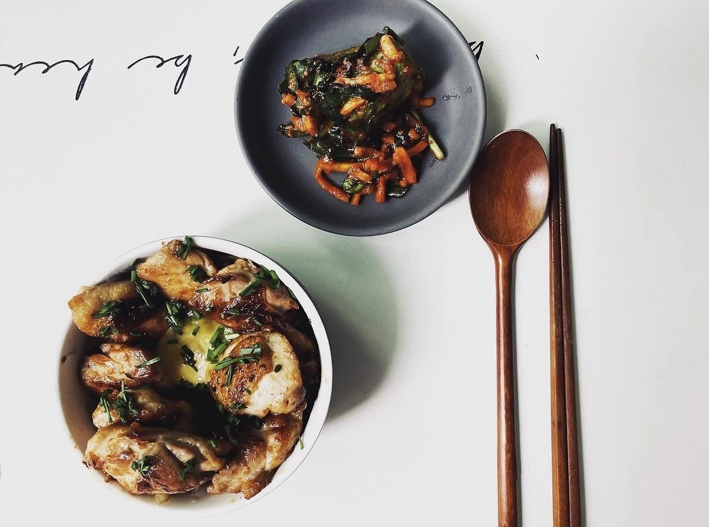
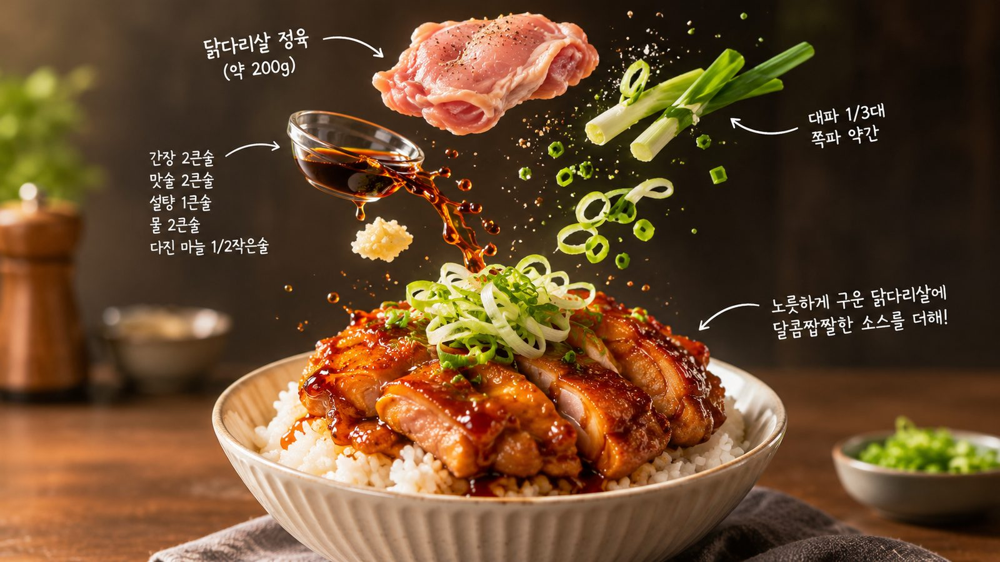

덮밥 · 20분 · 난이도 하
프라이팬 하나로 끝내는 닭다리살 덮밥
냄비 여러 개 꺼내기 싫은 날의 덮밥. 껍질부터 오래 굽고, 소스는 마지막에 졸이는 것이 전부.

- Time
- 20분
- Difficulty
- 하
- Serves
- 1인분
- Equipment
- 1구 인덕션
퇴근하고 냄비 여러 개 꺼내기 싫은 날, 제가 제일 자주 만드는 메뉴가 닭다리살 덮밥이에요. 닭다리살은 가슴살보다 기름이 적당히 있어서 오래 익혀도 퍽퍽해지지 않고, 껍질을 바삭하게 구우면 그 자체로 반찬이 돼요. 핵심은 껍질 쪽부터 오래 굽는 것, 그리고 소스를 마지막에 넣어 졸이는 거예요. 처음부터 양념에 재우면 껍질이 눅눅해지고 쉽게 타요.
Méthode
- 두께 맞추기닭다리살은 키친타월로 물기를 닦고, 두꺼운 살 부분에 칼집을 넣어 두께를 맞춰요. 소금·후추를 살짝 뿌려요.
- 껍질부터 7~8분달군 팬에 식용유를 얇게 두르고 껍질이 아래로 가게 올려요. 중불에서 뒤집지 말고 7~8분, 껍질이 노릇하고 바삭해질 때까지 구워요.
- 뒤집고 기름 닦기뒤집어서 3분 더 익힌 뒤, 팬에 나온 기름을 키친타월로 대부분 닦아내요.
- 소스 졸이기섞어둔 소스를 붓고 약불에서 닭에 끼얹어가며 1~2분 졸여요. 소스가 숟가락에 코팅될 정도면 불을 꺼요.
- 밥 위에 올리기닭을 2cm 폭으로 썰어 밥 위에 올리고, 남은 소스를 둘러요. 대파는 얇게 채 썰어 찬물에 담갔다가 올리고, 쪽파를 뿌려 마무리해요.
Chef's Note — 원룸 팁
기름 튐이 걱정되면 껍질을 구울 때 뚜껑 대신 망을 덮어주세요. 수증기가 빠져서 껍질도 더 바삭해요.
김치나 무침 같은 밑반찬 하나만 곁들이면 한 상 차림이 돼요.
익숙한 데리야끼 맛이지만, 껍질을 끝까지 굽는 것 하나로 식감이 완전히 달라져요. 처음엔 7분이 길게 느껴지는데, 그 시간을 참는 게 이 덮밥의 전부예요.
